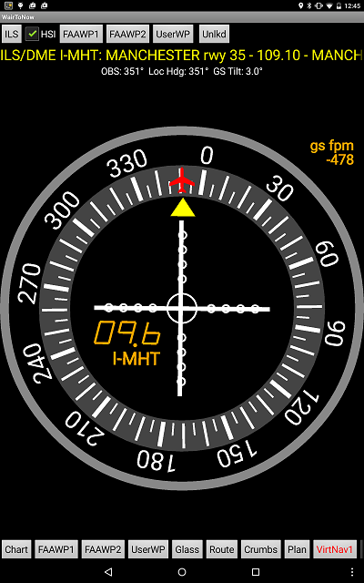
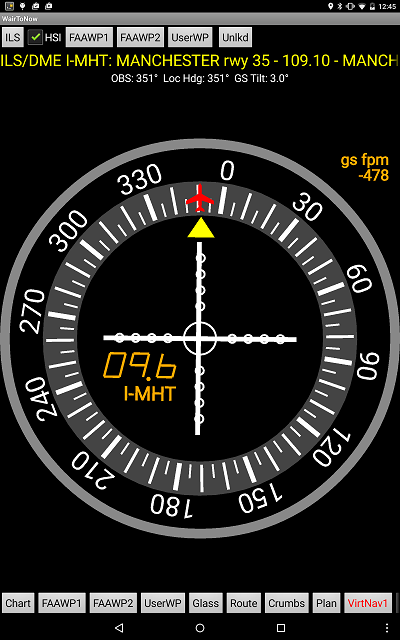

| Using the LWM-VOR-23 approach as an NDB approach | Doing the MHT-ILS-35 approach with DME enabled and glideslope indication |
|---|---|
 |
 |
These pages display dials similar to conventional VOR and ADF dials. They can be used for IFR training IN VFR CONDITIONS where the conventional dials are not available in the aircraft or the beacons are not readily available in the area. They can also be used as backup dials for instrument flight.
A sample training would be to use a VOR approach plate as an NDB approach when there are no NDB approaches available nearby. You would select the VOR approach's FAF as the beacon and then select ADF mode for the display.
USE ONLY FOR TRAINING IN VFR CONDITIONS or as backup in other instrument flying. Be especially wary when using the ILS mode, as the altitude in these GPS receivers is notoriously inaccurate, leading to inaccurate glideslope indications!
NOTE: This page is disabled when Option Type B is checked so as to block the GPS from providing false or misleading information.
Similarly, you can tune in a localizer or ILS. It will by default set the display to LOC or ILS mode, depending on the beacon type. When the display is in LOC or ILS mode, the OBS dial will be locked to the localizer heading. If you set the display to VOR or ADF mode, WairToNow will behave as if there was a VOR or ADF at the same spot as the localizer and you can rotate the dial freely.
When in ILS mode, the dial will calculate what your descent rate should be to stay on the glideslope, in feet per minute. This calculation is based on what the device's GPS is showing for the aircraft's ground speed and the glideslope antenna tilt as provided in the FAA database. The indication will appear in the upper right corner of the dial window. This is advisory only and you must follow your approved navigation system's glideslope indications as the final authority.
| Using the LWM-VOR-23 approach as an NDB approach | Doing the MHT-ILS-35 approach with DME enabled and glideslope indication |
|---|---|
|
 |
The VirtNav pages will attempt to automatically tune a navaid used by an approach so you don't have to type the identifier in a dialog box.
| Doing the BVY-LOC-16 approach with plate |
|---|
 |
For most approaches, the VirtNav page can step through an approach, automatically turning the OBS dial as appropriate. This is called Coded Istrument Flight Procedure (CIFP) mode.
The dial should track your progress as you go along. When you are on the final approach course within 3nm of the FAF, it will switch to glideslope mode to guide you down to the runway. Outside of that, it will be in terminal mode with no glideslope provided.
Once you reach the missed approach point, it will automatically step through the published missed approach sequence. The missed approach sequence is displayed with cyan dots and text.
NOTE: The OBS dial is locked in place while in CIFP mode, indicating the magnetic course for the current segment (depicted in magenta). The only exception is during the first segment of a radar-vector approach, where you can set the vector heading in the OBS dial by dragging your finger around the dial.
NOTE: If you change the IAF or the plate, you will have to re-tune the VirtNav dial to use the new CIFP. Just re-click the FAAWP1 or FAAPW2 button in the upper left corner and it will start tracking the new steps.
| Doing CIFP approach with text steps showing |
|---|
| Doing CIFP approach with text steps hidden |